動かない時がチャンス！ [梅吉]
週末にかけて寒かったですねー。
今シーズン初、手袋を使いました。
日中は家の中でもタイツ＆ヒートテック。
一番厚手の毛布も出して夜も完全冬仕様となりました。
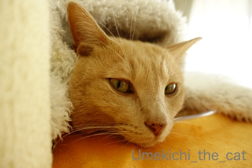
寒くなると動きがなくなる猫。
猫って変温動物でしたっけ？(⌒-⌒;
例年通り湯たんぽを仕込んだベッドもホットカーペットも用意しておりますが
すっかりクリアボールに入り浸ってます。
にゃま首で甘えモードの梅吉さん。
甘えモードだとなぜか鼻筋が長くなるんです( ´艸｀)
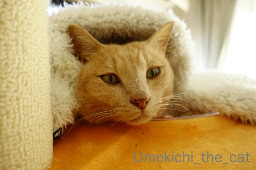
こんな感じで動かない時は大チャンス！！
それは・・・・・
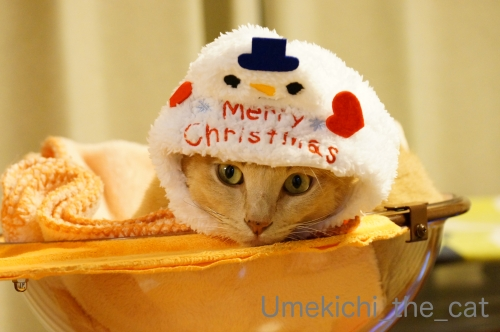
被り物w
街はイルミネーションも始まってクリスマス一色ですからね。
梅吉さんもクリスマスっぽくいきましょうよ＾＾
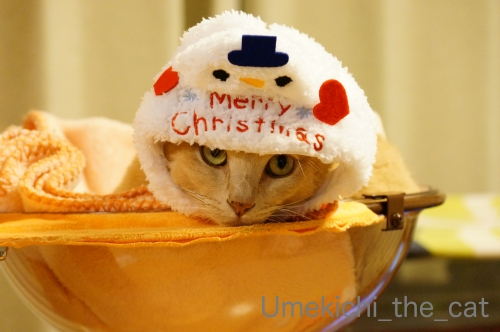
![[猫]](https://blog.ss-blog.jp/_images_e/101.gif) わしで あそばんといてや
わしで あそばんといてや
気温が低いと日中は本当に寝てばかりです。
その分人間が寝る頃になると元気になってきて・・・・
連日私がベッドに入ってからあちこちでガサガサしているので
気になって見に行くと物陰から飛びかかってきて追いかけっこに誘われます。
おかーさん、眠いし寒いんですけど(꒦ິ⌑꒦ີ)
 ↑ガブッと一押し↑
↑ガブッと一押し↑
土曜日、大和三山の一つ畝傍山登山に行ってきました。
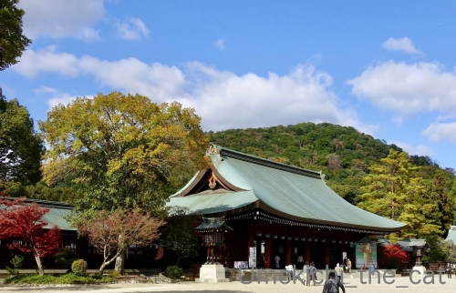
畝傍山は橿原神宮の裏手に位置します。
屋根の向こうに見える低い山がそれです。
登山口のいくつかは鳥居をくぐった神社の敷地内のあるので
軽くお参りをしてから登山口に向かいました。
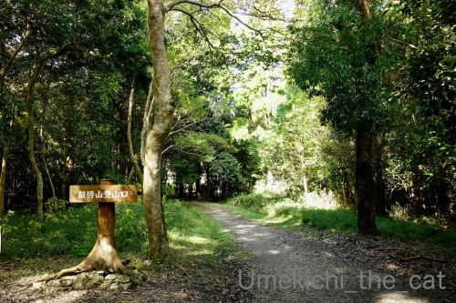
北神門近くにあるこの登山口から入山。
畝傍山は標高約199メートル。
年配の方からお子様までハイキング感覚で行けるところ・・・
なんて聞いていたのですが
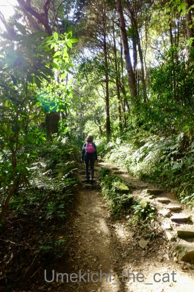
半分も登らないうちに背中が疲れている人w
なだらかな道もありますが結構キツイ傾斜の道も多いです。
が、すれ違う下山してくる方々は明らかに私たちよりも年配者か子供ばかり。
負けるわけにはいきませぬ。
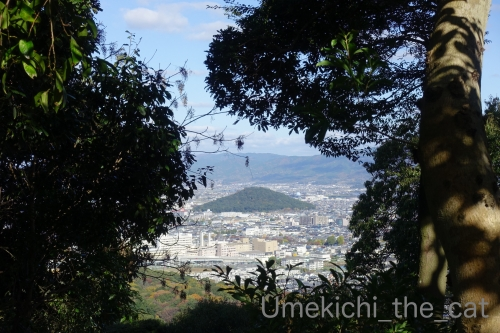
2〜30分かかって登頂！
木立の間から見えているのは耳成山です。
香具山始め他の山はちょっとよくわかりませんでした。
というのも山頂は結構鬱蒼としていてそれほど見晴らしが良くないのです。
それでもあちこち眺めて持参したサンドイッチを食べて下山。
上りとは違うルート（若桜遊苑へ降るルート）を行きましたよ。
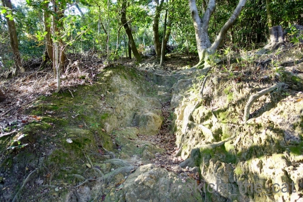
この写真でおわかりいただけるかな？
この下りのルート、道が狭くて急で大変でした！
畝傍山は「火がうねる山」の意味でかつて火山だったのでは？とも言われているのですが
その名残とも言える流紋岩？がゴロゴロしています。この石が固くてよく滑る！
（この火山から流紋岩の記述は間違ってるよ、の時は指摘してくださいね。）
途中急斜面でうっかり足を取られて尻餅をつき
登山道に大きな「尻紋」を残してきたおばちゃんですwww
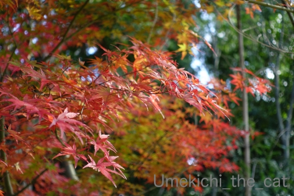
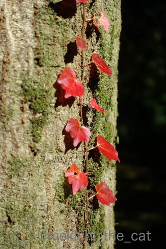
足を取られないようおっかなびっくりしつつも紅葉を楽しんで無事下山しました。
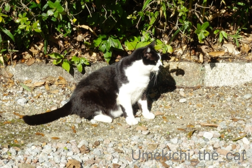
ホッと一息ついたところでねこさんのお出迎え＾＾
若桜遊苑の地域猫さんでした。
遊苑管理のおっちゃんに聞くと「誰かが放（ほか）していきよったわ」とのことでしたが
迷惑そうなお顔ではなくてにっこにこ。
お耳にはさくらカットがあったのでエサやりさんもいる様子。
毛並みも良い猫さんだったので可愛がられているのかな＾＾よかった！
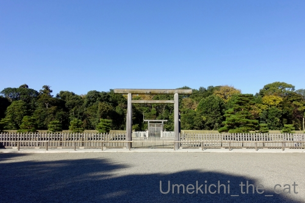
下山後は神武天皇陵を参拝してきました。
明らかに外界とは違った空気の漂う空間でした。
あの木立の向こうはどうなっているのかしらー！
＊＊＊＊＊＊＊＊＊＊＊＊＊＊＊＊＊＊＊＊＊＊＊＊＊＊＊＊＊＊＊＊
この登山（？）の影響で昨日は朝から筋肉痛でした。
近頃筋肉痛は1日空けてから出ることが多かったのですが今回は翌日w
作朝、おっとは「筋肉痛？それなに？？」って勝ち誇った顔していたのですが
夕方くらいから体の動きがギクシャクしてました(*>艸<)
みなさん筋肉痛っていつ来ますか？？？
今シーズン初、手袋を使いました。
日中は家の中でもタイツ＆ヒートテック。
一番厚手の毛布も出して夜も完全冬仕様となりました。
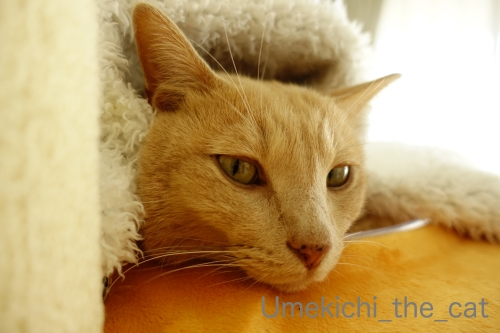
寒くなると動きがなくなる猫。
猫って変温動物でしたっけ？(⌒-⌒;
例年通り湯たんぽを仕込んだベッドもホットカーペットも用意しておりますが
すっかりクリアボールに入り浸ってます。
にゃま首で甘えモードの梅吉さん。
甘えモードだとなぜか鼻筋が長くなるんです( ´艸｀)
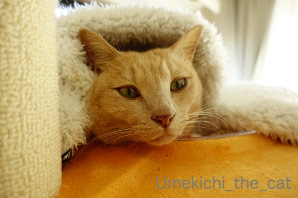
こんな感じで動かない時は大チャンス！！
それは・・・・・
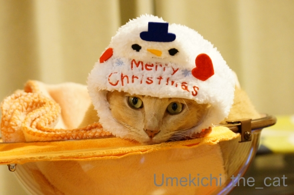
被り物w
街はイルミネーションも始まってクリスマス一色ですからね。
梅吉さんもクリスマスっぽくいきましょうよ＾＾
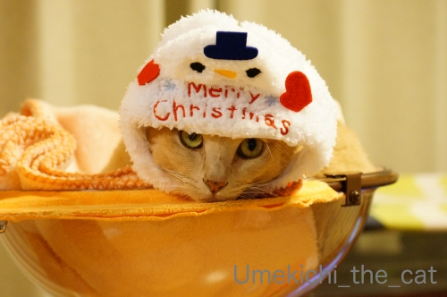
気温が低いと日中は本当に寝てばかりです。
その分人間が寝る頃になると元気になってきて・・・・
連日私がベッドに入ってからあちこちでガサガサしているので
気になって見に行くと物陰から飛びかかってきて追いかけっこに誘われます。
おかーさん、眠いし寒いんですけど(꒦ິ⌑꒦ີ)
土曜日、大和三山の一つ畝傍山登山に行ってきました。
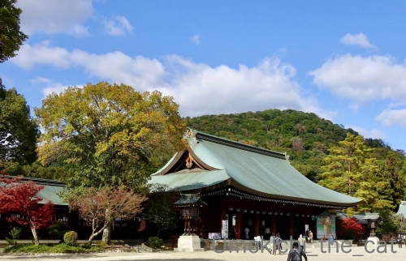
畝傍山は橿原神宮の裏手に位置します。
屋根の向こうに見える低い山がそれです。
登山口のいくつかは鳥居をくぐった神社の敷地内のあるので
軽くお参りをしてから登山口に向かいました。
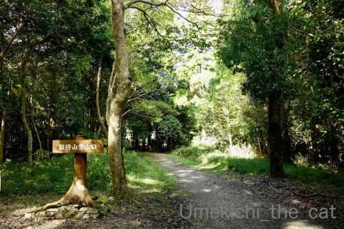
北神門近くにあるこの登山口から入山。
畝傍山は標高約199メートル。
年配の方からお子様までハイキング感覚で行けるところ・・・
なんて聞いていたのですが
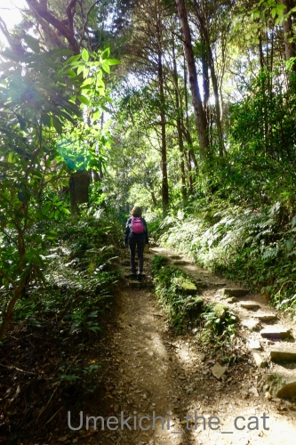
半分も登らないうちに背中が疲れている人w
なだらかな道もありますが結構キツイ傾斜の道も多いです。
が、すれ違う下山してくる方々は明らかに私たちよりも年配者か子供ばかり。
負けるわけにはいきませぬ。
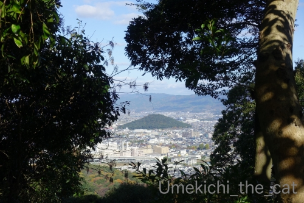
2〜30分かかって登頂！
木立の間から見えているのは耳成山です。
香具山始め他の山はちょっとよくわかりませんでした。
というのも山頂は結構鬱蒼としていてそれほど見晴らしが良くないのです。
それでもあちこち眺めて持参したサンドイッチを食べて下山。
上りとは違うルート（若桜遊苑へ降るルート）を行きましたよ。
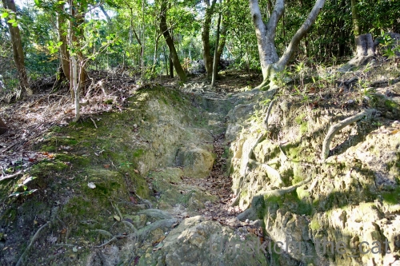
この写真でおわかりいただけるかな？
この下りのルート、道が狭くて急で大変でした！
畝傍山は「火がうねる山」の意味でかつて火山だったのでは？とも言われているのですが
その名残とも言える流紋岩？がゴロゴロしています。この石が固くてよく滑る！
（この火山から流紋岩の記述は間違ってるよ、の時は指摘してくださいね。）
途中急斜面でうっかり足を取られて尻餅をつき
登山道に大きな「尻紋」を残してきたおばちゃんですwww
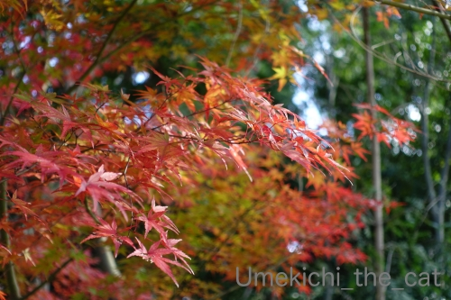
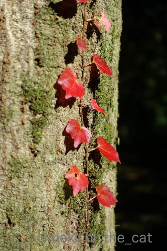
足を取られないようおっかなびっくりしつつも紅葉を楽しんで無事下山しました。
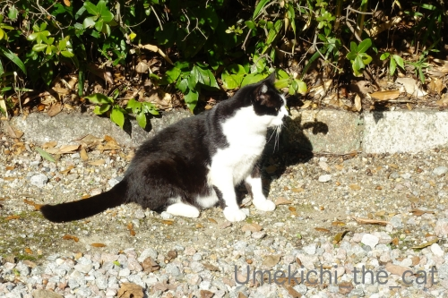
ホッと一息ついたところでねこさんのお出迎え＾＾
若桜遊苑の地域猫さんでした。
遊苑管理のおっちゃんに聞くと「誰かが放（ほか）していきよったわ」とのことでしたが
迷惑そうなお顔ではなくてにっこにこ。
お耳にはさくらカットがあったのでエサやりさんもいる様子。
毛並みも良い猫さんだったので可愛がられているのかな＾＾よかった！
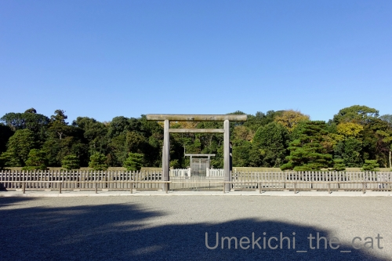
下山後は神武天皇陵を参拝してきました。
明らかに外界とは違った空気の漂う空間でした。
あの木立の向こうはどうなっているのかしらー！
＊＊＊＊＊＊＊＊＊＊＊＊＊＊＊＊＊＊＊＊＊＊＊＊＊＊＊＊＊＊＊＊
この登山（？）の影響で昨日は朝から筋肉痛でした。
近頃筋肉痛は1日空けてから出ることが多かったのですが今回は翌日w
作朝、おっとは「筋肉痛？それなに？？」って勝ち誇った顔していたのですが
夕方くらいから体の動きがギクシャクしてました(*>艸<)
みなさん筋肉痛っていつ来ますか？？？

カフェオレ色の梅吉

梅吉 2023年8月10日 永眠


梅吉と出会った譲渡会

犬猫の理由なき殺処分ゼロ
妄想広告
UMEKICHI 光

爆発的に早い！
時々攻撃的！
Thanks to Mr.Boss365
爆発的に早い！
時々攻撃的！
Thanks to Mr.Boss365

土曜日は寒くて笑っただけで唇が切れ流血したyamatonosukeです(笑)
土曜日に畝傍山へ登られてたんですか！
ネタバレになるのでここだけの話ですが、
その日に香具山へ登りそこから畝傍山を眺めてました。
大和三山の中では畝傍山が一番登山感ある山かも？
これであと余裕の二山となりましたね♪
神武天皇陵の空気感を味わっていただき奈良県民として嬉しいです( ◠‿◠ )
by yamatonosuke (2019-12-02 01:28)
梅吉さん雪だるまが可愛いわぁ。
畝傍山とか香具山とか神聖な山の雰囲気ですね。神武天皇陵も広いんだー。
by zombiekong (2019-12-02 02:52)
朝から笑ったわ～。ありがと～！
by yumibaba (2019-12-02 04:28)
うちのニャンも動かなくなりますね。
日が当たると窓際で日向ぼっこ、
日が当たらない時はコタツに籠る。
窓際とコタツの往復の繰り返し＾＾
by ぽちの輔 (2019-12-02 06:06)
寒いとぬくぬくの場所で動かなくなりますよねぇ( ^ω^ )
梅吉さんは被り物で写真を撮らせてくれるけど
うちのはかぶせた時点で速攻振り落します(ｰ ｰ;)
かみさんに協力してもらおうと思いましたが
「面倒いし、ニャンズも嫌がってるからイヤ(￣ー￣ )」と
かみさんもニャンズもネタつくりに非協力的です(´･_･`)
by ニッキー (2019-12-02 07:17)
もう１２月ですね・・・
寒いわけです(;^_^A
ぬくぬく動きたくない気持ち分かります♪
寝るころに元気（笑
ガサガサすると、ちぃさんが
やってくる♪って思っているかもしれませんね(#^.^#)
by きぃ (2019-12-02 07:53)
梅吉さん、寒いと動かなくなるのでされるがままですね！
橿原神宮も行きたいのですが大神神社にも行ってみたいです(^^)
by ma2ma2 (2019-12-02 08:40)
梅吉さん、クリアボウルを征服しましたね(#^^#)
あの丸いくぼみがきっと居心地いいのだと思います。
雪だるまさんがよくお似合い♪
畝傍山に尻紋！？(≧▽≦) 今度探しに行きます！！
ずっと関西なのに残念ながらこれまで登ったことがありません・・・。
最近筋肉痛になるほどの運動をすることがないのですが、ちょっと掃除を頑張ったりすると体が痛いのは翌日かな？？
カメラ持って日中歩き回ると、日の光に当たるだけで疲れちゃいます^^;
地域猫が優しく見守られているところはいい街ですね^^
by ゆきち (2019-12-02 12:18)
ニャンコは寒がりだけど、湯たんぽor行火代わりになるからいいよニャ（ﾟ□ﾟ）
最近、寒くて何処にも撮影に行ってませんw
クリスマスネタ(イルミネーション)も撮りに行きたいんだけどね。
by 英ちゃん (2019-12-02 12:27)
こんにちは。
梅吉君、クリアボールがお気に入りみたいですね。
高い所から観察出来るのも要因と感じます。
小生猫は寒くなると定位置から動かないので・・・
同じ写真ばかり？ブログアップ写真が不足しています（笑）
「被り物」確かにチャンスですね（笑）クリスマスグッズ探そう・・・
夜中？ニャンズは気まぐれ？お付き合いしましょう！！
畝傍山登山、天気も良く健康的ですね。
登頂、隙間から見える下界？多少残念みたいですが・・・
充実感はありそうです。「尻紋」はお大事にです。「尻紋」から噴火は勘弁です。
「若桜遊苑の地域猫さん」可愛がれれていて何よりです。
神武天皇陵！！「素木の鳥居」が良い感じ、訪ねたい場所です。
最近の「筋肉痛」は忘れた頃？２〜３日後ですね（笑）！？(=^･ｪ･^=)
by Boss365 (2019-12-02 13:07)
可愛らしい雪だるまな梅吉くん♪
クリアボールに入りびたりなんだ～。これは嬉しいね(≧▽≦)
動かない時がチャンス！
私もシャッターチャンスを狙いたいけどひなとまりもとくるみは
ぬくぬく眠っちゃってるし。
タラに至っては、瞬間移動してるのか？と思うくらい
まだまだ活発に動き回っています。
昼間はぐっすり寝ているんだけどな～。
筋肉痛！私は忘れたころにやってきますよｗ
たま～にその日の夜あたりからくると、私どこか悪いのかも・・・と
心配になります(#^^#)
by emi (2019-12-02 15:28)
もうクリスマスですよねｗ
じっとしていてくれる時は狙い目ですね。梅吉さんは被り物マスターなので
安定の貫禄が漂いますね(^^
うちのニャンズも特にNaoちゃんのご機嫌を取りながらの撮影が一瞬のチャンスのみとなっておりますので勝負です(;^_^A
私はまだ橿原神宮すらまだ参拝したことがないのでした。近くて遠い奈良県。
畝傍山登山はお天気も良かったので気持ちのいいひと時だったのではないでしょうか。手つくりのサンドイッチ？が美味しかったことでしょう。
多分鶏足寺は標高は100mくらいなのだと思いますが奥への距離があったので片道25分かかりました。
切り立つ岩の山は歩きにくくて危険ですよね。尻紋で済んでよかったです。
筋肉痛は一晩寝て起きると痛いですかね。
by marimo (2019-12-02 16:59)
クリアボールに慣れてくれて、嬉しいですね♪
登山道って、かなりきついところでも、好きな人は平気で行きますよね。
私も立山で、お昼までには往復できるよ、と言われて、横を歩いてるのは
70台のお爺ちゃんと5歳児がコンビニのペットボトルをぶら下げて気軽に
歩く後ろをついていきましたが、大変な岩場で、帰るのに夕方までかかって
しまいました。筋肉痛で、夜中熱出しました。
by nachic (2019-12-02 17:49)
そうか！かぶり物はこの季節に！これはたしかにそうだね^^
あおも、全然動かないでフミフミしてるから
そのときにかぶらせてみよう(笑)
筋肉痛になるよねー。
でも本当に良い景色。写真をありがとう。
これをじっくり眺めて拝んで、病院に行くことにするよ^^
下山は、わりと危険だよね。
尻餅つくの分かります！
アマテラスさんが伊勢に鎮座したのが9月17日と知ったので（旧暦だけど）
この日が誕生日のわたしは、来年はアマテラスさん調査ｗｗの年にしようかと思っております！(笑)
by リュカ (2019-12-02 20:03)
クリスマスのお帽子の梅吉さん。2枚目はちょっと目つきが悪いけど(梅吉さんらしいといえばらしいけど)、1枚目の写真が超カワイイじゃないですか！
これでクリスマスカード作れます！
筋肉痛、普段使わない筋肉がなるんですよねー。
なので、日曜にピラティスに行くと、普通は使わない筋肉が痛くなるんです。
ただ、普通の筋肉痛と違って、すっごく微妙な感じで。
今日も内腿とかお尻の下の方が痛いーーー。
by ChatBleu (2019-12-02 21:36)
スーパーではBGMがクリスマス曲、
ホームセンターに行くと出入り口に鏡餅セット。
年末と年始が一気にやってきたようです。^^;
被り物梅吉さん、メチャ可愛いですね！！
低い山の登山であっても、行き交う人が挨拶してくれるのがなんだか嬉しいです。^^)
by yes_hama (2019-12-02 22:18)
梅吉君、被ってカメラ目線してくれてる～
旦那さんはいろいろ被せたいようですが
うちのコはそもそもじっとしてません（苦笑）
by 藤並 香衣 (2019-12-02 22:45)
にゃるほど！梅吉さん日中寝てるから、夜活動的になるのですね^^
by ニコニコファイト (2019-12-03 06:51)
最近は天候も荒れて、休みの日は寝てばかり。
梅吉さんと同じですね・・・(^^;)
by kou (2019-12-03 07:20)
スノーマン梅ちゃん、すっごくかわいいです❤
うちもコスさせたいけど、まだ病み上がりと
いうことで大目にみてあげています(￣∀￣*)いひひ
でももう完全復活といっていいのでそろそろ
初心者コースから始めてみよう(ΦωΦ)ふふふ
橿原神宮、一度お参りしてみたいところです。
神武天皇陵、先日天皇皇后両陛下が即位のご報告を
なさったところですよね。さすがにいい雰囲気ですね。
登山はこの画像を見て絶対ムリ！と思ったので止めておきますｗｗ
即筋肉痛になること間違いなし(笑)
by カトリーヌ (2019-12-03 11:17)
被り物、チャンス！見事に成功ですね～。
クリスマスシーズンにぴったりです！
元奈良県民の私ですが、畝傍山は登ったことないわ。
案外、急な坂あるんですね。
筋肉痛、いつもは少し遅れてくるお年頃ですが、
日曜のフルマラソンの筋肉痛はその当日から始まり、
現在もまだ階段降りるのに苦労してます～。
by よーちゃん (2019-12-03 12:20)
畝傍山は、高校の修学旅行で登った甘樫丘から見たのを思い出します(^^)
それが橿原神宮の裏にあるとは・・・知りませんでした^^;Aｱｾｱｾ
耳成山、天香久山も懐かしいです(^o^)
by kontenten (2019-12-04 16:29)
梅吉さん、ぬくぬくですね～＾＾
何だか面長に写っていると思ったら、甘えモードだと鼻が長くなる！？
雪だるまさん、お似合い～キュート！ 嫌がってないように見えます＾o＾
畝傍山登山‥
憧れの土地ですわ。額田女王が好きなので。空気感も違いそうですね‥＾＾
by sana (2019-12-04 18:52)
あらあ、上目遣いにそそられますね。
橿原神宮、こういう雰囲気なんですね。
奈良、時間の流れがゆっくりな感じでいいなあ。
by liang (2019-12-07 12:48)